CODING AGENTS AS PIXEL WORLD MODELS
traex/DeepSeek-V4.1-Flash · common50_0030
点击播放 · 原生 RGB 像素
逐轮保存的候选
回放视频、检查图与代码变化。
每份候选均可单独播放。实际图片检查记录在下方工具轨迹中。
候选 01播放与检查图
点击播放 · 原生 RGB 像素

展开代码变化
--- 上一保存版本
+++ 本次保存版本
@@ -0,0 +1,383 @@
+from pathlib import Path
+
+import cv2
+import numpy as np
+from PIL import Image
+
+import artifact_io
+
+
+ROOT = Path(__file__).resolve().parent
+WIDTH, HEIGHT = 256, 160
+N_FRAMES = 20
+
+
+def smoothstep(value):
+ value = np.clip(value, 0.0, 1.0)
+ return value * value * (3.0 - 2.0 * value)
+
+
+def ease(t, start, end):
+ return smoothstep((t - start) / (end - start))
+
+
+def poly_mask(points, feather=0):
+ mask = np.zeros((HEIGHT, WIDTH), np.uint8)
+ cv2.fillPoly(mask, [np.asarray(points, np.int32)], 255)
+ if feather:
+ mask = cv2.GaussianBlur(mask, (0, 0), feather)
+ return mask
+
+
+def make_clean_plate(source):
+ """Remove the original cloth and right hand, then restore fine wood grain."""
+ removal = poly_mask(
+ [
+ (143, 82),
+ (177, 82),
+ (184, 91),
+ (190, 112),
+ (195, 139),
+ (198, 160),
+ (228, 160),
+ (218, 151),
+ (207, 143),
+ (196, 135),
+ (187, 128),
+ (181, 119),
+ (185, 109),
+ (181, 98),
+ (174, 91),
+ (158, 91),
+ (154, 101),
+ (155, 118),
+ (160, 135),
+ (170, 150),
+ (177, 160),
+ (143, 160),
+ (140, 140),
+ (140, 115),
+ ],
+ 0,
+ )
+ removal = cv2.dilate(removal, np.ones((3, 3), np.uint8), iterations=1)
+ bgr = source[:, :, ::-1]
+ filled = cv2.inpaint(bgr, removal, 5, cv2.INPAINT_TELEA)[:, :, ::-1]
+
+ # Broad inpainting softens the wood. Reintroduce a restrained deterministic
+ # grain field only in the reconstructed strip.
+ yy, xx = np.mgrid[:HEIGHT, :WIDTH]
+ grain = (
+ 2.0 * np.sin(0.27 * xx + 0.035 * yy)
+ + 1.3 * np.sin(0.61 * xx - 0.18 * yy)
+ + 0.9 * np.sin(1.17 * yy + 0.11 * xx)
+ )
+ fine = np.sin(2.3 * xx + 1.7 * yy) * 0.45
+ amount = cv2.GaussianBlur((removal > 0).astype(np.float32), (0, 0), 5)
+ grain = ((grain + fine) * amount)[..., None]
+ filled = np.clip(filled.astype(np.float32) + grain * np.array([1.0, 0.75, 0.55]), 0, 255)
+
+ # Keep the untouched parts of the source exact.
+ result = filled.astype(np.uint8)
+ keep = removal == 0
+ result[keep] = source[keep]
+ return result
+
+
+def make_cloth_sprite(source):
+ """Cut the folded towel from the input and fill the hand-covered area."""
+ x0, y0, x1, y1 = 144, 82, 196, 160
+ crop = source[y0:y1, x0:x1].copy()
+
+ shape = poly_mask(
+ [
+ (148, 85),
+ (174, 84),
+ (180, 89),
+ (184, 101),
+ (187, 116),
+ (191, 135),
+ (193, 151),
+ (191, 160),
+ (161, 160),
+ (157, 150),
+ (155, 136),
+ (152, 120),
+ (150, 105),
+ (146, 93),
+ ]
+ )[y0:y1, x0:x1]
+
+ hand_poly = poly_mask(
+ [
+ (157, 93),
+ (174, 94),
+ (183, 100),
+ (188, 108),
+ (184, 117),
+ (180, 124),
+ (185, 131),
+ (194, 138),
+ (205, 146),
+ (231, 160),
+ (178, 160),
+ (174, 149),
+ (167, 139),
+ (164, 128),
+ (158, 117),
+ (154, 106),
+ ]
+ )[y0:y1, x0:x1]
+ hand_poly = cv2.erode(hand_poly, np.ones((3, 3), np.uint8), iterations=1)
+ hand_poly = cv2.dilate(hand_poly, np.ones((7, 7), np.uint8), iterations=1)
+ hand_poly = cv2.bitwise_and(hand_poly, shape)
+
+ filled = cv2.inpaint(crop[:, :, ::-1], hand_poly, 5, cv2.INPAINT_TELEA)[:, :, ::-1]
+ alpha = shape.astype(np.float32) / 255.0
+ alpha = cv2.GaussianBlur(alpha, (0, 0), 0.7)
+
+ # Give the cloth a folded seam and a restrained soft highlight.
+ crop_h, crop_w = shape.shape
+ seam_y = int(0.39 * crop_h)
+ seam = np.zeros_like(filled, dtype=np.float32)
+ seam[seam_y : seam_y + 1, :] = np.array([72, 61, 45], np.float32)
+ filled = np.clip(
+ filled.astype(np.float32) * 0.97 + seam * 0.45, 0, 255
+ ).astype(np.uint8)
+ return np.dstack([filled, (alpha * 255).astype(np.uint8)])
+
+
+def make_hand_sprite(source):
+ """Extract the neutral-colored right gripper with a soft, clean edge."""
+ x0, y0, x1, y1 = 151, 91, 233, 160
+ crop = source[y0:y1, x0:x1]
+ polygon = poly_mask(
+ [
+ (158, 94),
+ (172, 93),
+ (182, 99),
+ (188, 106),
+ (184, 115),
+ (180, 121),
+ (183, 126),
+ (188, 131),
+ (197, 136),
+ (207, 144),
+ (220, 151),
+ (234, 160),
+ (176, 160),
+ (173, 149),
+ (166, 138),
+ (163, 127),
+ (157, 116),
+ (153, 105),
+ ]
+ )[y0:y1, x0:x1]
+
+ values = crop.astype(np.int16)
+ spread = values.max(axis=2) - values.min(axis=2)
+ neutral = ((spread < 38) & (values.max(axis=2) < 188)) | (values.max(axis=2) < 62)
+ mask = (neutral & (polygon > 0)).astype(np.uint8) * 255
+ mask = cv2.morphologyEx(mask, cv2.MORPH_CLOSE, np.ones((3, 3), np.uint8))
+ mask = cv2.morphologyEx(mask, cv2.MORPH_OPEN, np.ones((2, 2), np.uint8))
+ mask = cv2.dilate(mask, np.ones((2, 2), np.uint8), iterations=1)
+ mask = cv2.bitwise_and(mask, polygon)
+ alpha = cv2.GaussianBlur(mask.astype(np.float32) / 255.0, (0, 0), 0.55)
+ return np.dstack([crop, (alpha * 255).astype(np.uint8)])
+
+
+def blend_rgba(canvas, sprite, matrix):
+ h, w = sprite.shape[:2]
+ warped = cv2.warpAffine(
+ sprite,
+ matrix,
+ (WIDTH, HEIGHT),
+ flags=cv2.INTER_LINEAR,
+ borderMode=cv2.BORDER_CONSTANT,
+ borderValue=(0, 0, 0, 0),
+ )
+ rgb = warped[:, :, :3].astype(np.float32)
+ alpha = warped[:, :, 3:4].astype(np.float32) / 255.0
+ canvas[:] = np.clip(
+ rgb * alpha + canvas.astype(np.float32) * (1.0 - alpha), 0, 255
+ ).astype(np.uint8)
+
+
+def transform_for_anchor(sprite, anchor_x, anchor_y, angle=0.0, scale=1.0):
+ """Place a source-cropped sprite using its original fingertip anchor."""
+ # Source fingertips are near (161, 98); make that the rotation pivot.
+ pivot_x, pivot_y = 161.0 - 151.0, 98.0 - 91.0
+ cosine = np.cos(angle) * scale
+ sine = np.sin(angle) * scale
+ return np.array(
+ [
+ [cosine, sine, anchor_x - cosine * pivot_x - sine * pivot_y],
+ [-sine, cosine, anchor_y + sine * pivot_x - cosine * pivot_y],
+ ],
+ np.float32,
+ )
+
+
+def cloth_quad(t):
+ """Return the four cloth corners through grasp, lift, carry, and lay-down."""
+ initial = np.array([[148.0, 85.0], [176.0, 85.0], [191.0, 160.0], [159.0, 160.0]])
+ grip = np.array([[151.0, 89.0], [178.0, 88.0], [190.0, 159.0], [160.0, 159.0]])
+ lifted = np.array([[150.0, 89.0], [176.0, 92.0], [185.0, 132.0], [159.0, 139.0]])
+ carried = np.array([[79.0, 88.0], [105.0, 91.0], [113.0, 132.0], [88.0, 139.0]])
+ lowered = np.array([[67.0, 100.0], [108.0, 98.0], [116.0, 143.0], [74.0, 146.0]])
+ final = np.array([[61.0, 94.0], [107.0, 93.0], [113.0, 145.0], [66.0, 147.0]])
+
+ if t <= 4:
+ return initial, 0.0
+ if t <= 6:
+ a = ease(t, 4, 6)
+ return initial * (1 - a) + grip * a, 0.08 * a
+ if t <= 10:
+ a = ease(t, 6, 10)
+ return grip * (1 - a) + lifted * a, 0.08 + 0.10 * a
+ if t <= 14:
+ a = ease(t, 10, 14)
+ return lifted * (1 - a) + carried * a, 0.18
+ if t <= 16:
+ a = ease(t, 14, 16)
+ return carried * (1 - a) + lowered * a, 0.18 * (1 - a)
+ if t <= 18:
+ a = ease(t, 16, 18)
+ return lowered * (1 - a) + final * a, 0.0
+ return final, 0.0
+
+
+def draw_cloth(canvas, cloth, t):
+ quad, wrinkle = cloth_quad(t)
+ src_h, src_w = cloth.shape[:2]
+
+ # Subdivide vertically so the carried towel has a soft, gravity-led bow.
+ rows = 14
+ cols = 8
+ warped = np.zeros((HEIGHT, WIDTH, 4), np.uint8)
+ src = cloth.astype(np.float32)
+ for row in range(rows):
+ v0, v1 = row / rows, (row + 1) / rows
+ left = quad[0] * (1 - v0) + quad[3] * v0
+ right = quad[1] * (1 - v0) + quad[2] * v0
+ left1 = quad[0] * (1 - v1) + quad[3] * v1
+ right1 = quad[1] * (1 - v1) + quad[2] * v1
+ sy0, sy1 = int(v0 * src_h), max(int(v1 * src_h), int(v0 * src_h) + 1)
+ for col in range(cols):
+ u0, u1 = col / cols, (col + 1) / cols
+ p = np.array(
+ [
+ left * (1 - u0) + right * u0,
+ left * (1 - u1) + right * u1,
+ left1 * (1 - u1) + right1 * u1,
+ left1 * (1 - u0) + right1 * u0,
+ ],
+ np.float32,
+ )
+ # Bow the hanging sheet sideways near its lower half.
+ center_v = (v0 + v1) * 0.5
+ center_u = (u0 + u1) * 0.5
+ p[:, 0] += wrinkle * np.sin(2.4 * np.pi * center_v) * (0.3 + center_u)
+ p[:, 1] += 1.3 * wrinkle * np.sin(3.0 * np.pi * center_u) * center_v
+ sx0, sx1 = int(u0 * src_w), max(int(u1 * src_w), int(u0 * src_w) + 1)
+ src_patch = src[sy0:sy1, sx0:sx1]
+ dst_patch = cv2.resize(
+ src_patch, (max(2, int(np.ptp(p[:, 0])) + 1), max(2, sy1 - sy0)),
+ interpolation=cv2.INTER_LINEAR,
+ )
+ dst_quad = p - p[:, 0].min(), p - p[:, 1].min()
+ # A quadrilateral warp preserves the source texture better than a
+ # simple resize, even for the small off-axis motion.
+ x_min = max(0, int(np.floor(p[:, 0].min())))
+ y_min = max(0, int(np.floor(p[:, 1].min())))
+ x_max = min(WIDTH, int(np.ceil(p[:, 0].max())) + 1)
+ y_max = min(HEIGHT, int(np.ceil(p[:, 1].max())) + 1)
+ if x_max <= x_min or y_max <= y_min:
+ continue
+ source_quad = np.array(
+ [[0, 0], [src_patch.shape[1] - 1, 0],
+ [src_patch.shape[1] - 1, src_patch.shape[0] - 1],
+ [0, src_patch.shape[0] - 1]],
+ np.float32,
+ )
+ dest_quad = p - np.array([x_min, y_min], np.float32)
+ matrix = cv2.getPerspectiveTransform(source_quad, dest_quad)
+ local = cv2.warpPerspective(
+ src_patch,
+ matrix,
+ (x_max - x_min, y_max - y_min),
+ flags=cv2.INTER_LINEAR,
+ borderMode=cv2.BORDER_CONSTANT,
+ borderValue=(0, 0, 0, 0),
+ )
+ region = warped[y_min:y_max, x_min:x_max]
+ alpha = local[:, :, 3:4].astype(np.float32) / 255.0
+ region[:] = np.clip(
+ local.astype(np.float32) * alpha
+ + region.astype(np.float32) * (1 - alpha),
+ 0, 255,
+ ).astype(np.uint8)
+
+ # A thin contact shadow makes the sheet sit on the table.
+ shadow = warped[:, :, 3].astype(np.float32) / 255.0
+ shadow = cv2.GaussianBlur(shadow, (0, 0), 2.2)
+ shadow = np.roll(shadow, (3, 2), axis=(0, 1)) * 0.20
+ canvas[:] = np.clip(
+ canvas.astype(np.float32) * (1 - shadow[..., None]), 0, 255
+ ).astype(np.uint8)
+ alpha = warped[:, :, 3:4].astype(np.float32) / 255.0
+ canvas[:] = np.clip(
+ warped[:, :, :3].astype(np.float32) * alpha
+ + canvas.astype(np.float32) * (1 - alpha),
+ 0, 255,
+ ).astype(np.uint8)
+
+
+def hand_state(t):
+ # The visible fingertip leads the cloth by a few pixels during the carry.
+ if t <= 3:
+ a = ease(t, 0, 3)
+ return 163.0 - 2.0 * a, 100.0 + 1.0 * a, 0.00, 1.0
+ if t <= 6:
+ a = ease(t, 3, 6)
+ return 161.0, 101.0 - 5.0 * a, -0.04 * a, 1.0
+ if t <= 10:
+ a = ease(t, 6, 10)
+ return 161.0 - 8.0 * a, 96.0 - 8.0 * a, -0.04 - 0.08 * a, 1.0
+ if t <= 14:
+ a = ease(t, 10, 14)
+ return 153.0 - 67.0 * a, 88.0 - 2.0 * a, -0.12, 1.0
+ if t <= 16:
+ a = ease(t, 14, 16)
+ return 86.0 - 14.0 * a, 86.0 + 8.0 * a, -0.12 + 0.07 * a, 1.0
+ if t <= 19:
+ a = ease(t, 16, 19)
+ return 72.0 + 82.0 * a, 94.0 - 2.0 * a, -0.05, 1.0
+ return 154.0, 92.0, -0.05, 1.0
+
+
+def render():
+ source = np.asarray(Image.open(ROOT / "first_frame.png").convert("RGB"), np.uint8)
+ plate = make_clean_plate(source)
+ cloth = make_cloth_sprite(source)
+ hand = make_hand_sprite(source)
+ frames = []
+
+ for index in range(N_FRAMES):
+ frame = plate.copy()
+ draw_cloth(frame, cloth, index)
+ x, y, angle, scale = hand_state(index)
+ blend_rgba(frame, hand, transform_for_anchor(hand, x, y, angle, scale))
+ if index == 0:
+ frame = source.copy()
+ frames.append(frame)
+ return np.stack(frames)
+
+
+def main():
+ frames = render()
+ artifact_io.save(frames, ROOT)
+
+
+if __name__ == "__main__":
+ main()
候选 02播放与检查图
点击播放 · 原生 RGB 像素

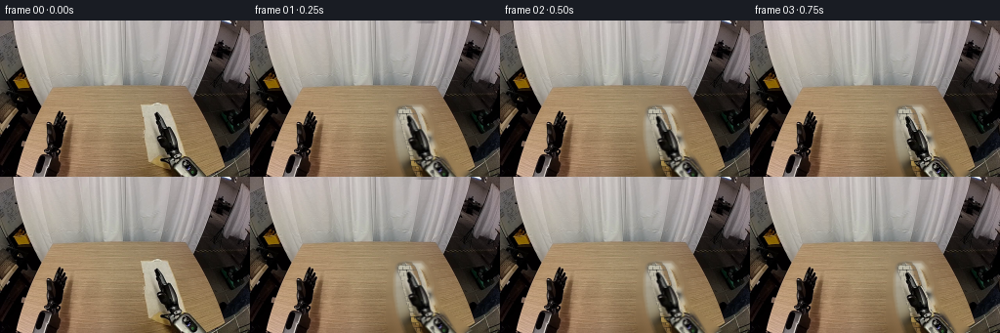
展开代码变化
--- 上一保存版本
+++ 本次保存版本
@@ -134,7 +134,7 @@
filled = cv2.inpaint(crop[:, :, ::-1], hand_poly, 5, cv2.INPAINT_TELEA)[:, :, ::-1]
alpha = shape.astype(np.float32) / 255.0
- alpha = cv2.GaussianBlur(alpha, (0, 0), 0.7)
+ alpha = cv2.GaussianBlur(alpha, (0, 0), 0.45)
# Give the cloth a folded seam and a restrained soft highlight.
crop_h, crop_w = shape.shape
@@ -148,41 +148,35 @@
def make_hand_sprite(source):
- """Extract the neutral-colored right gripper with a soft, clean edge."""
+ """Extract the full right gripper as a rigid photographic sprite."""
x0, y0, x1, y1 = 151, 91, 233, 160
- crop = source[y0:y1, x0:x1]
+ crop = source[y0:y1, x0:x1].copy()
polygon = poly_mask(
[
- (158, 94),
- (172, 93),
- (182, 99),
- (188, 106),
- (184, 115),
- (180, 121),
- (183, 126),
- (188, 131),
- (197, 136),
- (207, 144),
- (220, 151),
+ (157, 94),
+ (171, 93),
+ (181, 98),
+ (187, 105),
+ (184, 114),
+ (180, 120),
+ (182, 126),
+ (188, 132),
+ (198, 137),
+ (210, 145),
+ (221, 152),
(234, 160),
(176, 160),
- (173, 149),
- (166, 138),
- (163, 127),
- (157, 116),
- (153, 105),
+ (174, 151),
+ (167, 140),
+ (164, 129),
+ (158, 117),
+ (154, 106),
]
)[y0:y1, x0:x1]
-
- values = crop.astype(np.int16)
- spread = values.max(axis=2) - values.min(axis=2)
- neutral = ((spread < 38) & (values.max(axis=2) < 188)) | (values.max(axis=2) < 62)
- mask = (neutral & (polygon > 0)).astype(np.uint8) * 255
- mask = cv2.morphologyEx(mask, cv2.MORPH_CLOSE, np.ones((3, 3), np.uint8))
- mask = cv2.morphologyEx(mask, cv2.MORPH_OPEN, np.ones((2, 2), np.uint8))
- mask = cv2.dilate(mask, np.ones((2, 2), np.uint8), iterations=1)
- mask = cv2.bitwise_and(mask, polygon)
- alpha = cv2.GaussianBlur(mask.astype(np.float32) / 255.0, (0, 0), 0.55)
+ # The hand dominates this crop. Use the polygon itself, with a tiny
+ # erosion, instead of color-keying away the gripper's bright highlights.
+ mask = cv2.erode(polygon, np.ones((2, 2), np.uint8), iterations=1)
+ alpha = cv2.GaussianBlur(mask.astype(np.float32) / 255.0, (0, 0), 0.45)
return np.dstack([crop, (alpha * 255).astype(np.uint8)])
@@ -222,8 +216,8 @@
"""Return the four cloth corners through grasp, lift, carry, and lay-down."""
initial = np.array([[148.0, 85.0], [176.0, 85.0], [191.0, 160.0], [159.0, 160.0]])
grip = np.array([[151.0, 89.0], [178.0, 88.0], [190.0, 159.0], [160.0, 159.0]])
- lifted = np.array([[150.0, 89.0], [176.0, 92.0], [185.0, 132.0], [159.0, 139.0]])
- carried = np.array([[79.0, 88.0], [105.0, 91.0], [113.0, 132.0], [88.0, 139.0]])
+ lifted = np.array([[150.0, 89.0], [176.0, 92.0], [184.0, 132.0], [159.0, 139.0]])
+ carried = np.array([[79.0, 88.0], [105.0, 91.0], [112.0, 132.0], [88.0, 139.0]])
lowered = np.array([[67.0, 100.0], [108.0, 98.0], [116.0, 143.0], [74.0, 146.0]])
final = np.array([[61.0, 94.0], [107.0, 93.0], [113.0, 145.0], [66.0, 147.0]])
@@ -250,73 +244,26 @@
def draw_cloth(canvas, cloth, t):
quad, wrinkle = cloth_quad(t)
src_h, src_w = cloth.shape[:2]
-
- # Subdivide vertically so the carried towel has a soft, gravity-led bow.
- rows = 14
- cols = 8
- warped = np.zeros((HEIGHT, WIDTH, 4), np.uint8)
- src = cloth.astype(np.float32)
- for row in range(rows):
- v0, v1 = row / rows, (row + 1) / rows
- left = quad[0] * (1 - v0) + quad[3] * v0
- right = quad[1] * (1 - v0) + quad[2] * v0
- left1 = quad[0] * (1 - v1) + quad[3] * v1
- right1 = quad[1] * (1 - v1) + quad[2] * v1
- sy0, sy1 = int(v0 * src_h), max(int(v1 * src_h), int(v0 * src_h) + 1)
- for col in range(cols):
- u0, u1 = col / cols, (col + 1) / cols
- p = np.array(
- [
- left * (1 - u0) + right * u0,
- left * (1 - u1) + right * u1,
- left1 * (1 - u1) + right1 * u1,
- left1 * (1 - u0) + right1 * u0,
- ],
- np.float32,
- )
- # Bow the hanging sheet sideways near its lower half.
- center_v = (v0 + v1) * 0.5
- center_u = (u0 + u1) * 0.5
- p[:, 0] += wrinkle * np.sin(2.4 * np.pi * center_v) * (0.3 + center_u)
- p[:, 1] += 1.3 * wrinkle * np.sin(3.0 * np.pi * center_u) * center_v
- sx0, sx1 = int(u0 * src_w), max(int(u1 * src_w), int(u0 * src_w) + 1)
- src_patch = src[sy0:sy1, sx0:sx1]
- dst_patch = cv2.resize(
- src_patch, (max(2, int(np.ptp(p[:, 0])) + 1), max(2, sy1 - sy0)),
- interpolation=cv2.INTER_LINEAR,
- )
- dst_quad = p - p[:, 0].min(), p - p[:, 1].min()
- # A quadrilateral warp preserves the source texture better than a
- # simple resize, even for the small off-axis motion.
- x_min = max(0, int(np.floor(p[:, 0].min())))
- y_min = max(0, int(np.floor(p[:, 1].min())))
- x_max = min(WIDTH, int(np.ceil(p[:, 0].max())) + 1)
- y_max = min(HEIGHT, int(np.ceil(p[:, 1].max())) + 1)
- if x_max <= x_min or y_max <= y_min:
- continue
- source_quad = np.array(
- [[0, 0], [src_patch.shape[1] - 1, 0],
- [src_patch.shape[1] - 1, src_patch.shape[0] - 1],
- [0, src_patch.shape[0] - 1]],
- np.float32,
- )
- dest_quad = p - np.array([x_min, y_min], np.float32)
- matrix = cv2.getPerspectiveTransform(source_quad, dest_quad)
- local = cv2.warpPerspective(
- src_patch,
- matrix,
- (x_max - x_min, y_max - y_min),
- flags=cv2.INTER_LINEAR,
- borderMode=cv2.BORDER_CONSTANT,
- borderValue=(0, 0, 0, 0),
- )
- region = warped[y_min:y_max, x_min:x_max]
- alpha = local[:, :, 3:4].astype(np.float32) / 255.0
- region[:] = np.clip(
- local.astype(np.float32) * alpha
- + region.astype(np.float32) * (1 - alpha),
- 0, 255,
- ).astype(np.uint8)
+ source_quad = np.array(
+ [[0, 0], [src_w - 1, 0], [src_w - 1, src_h - 1], [0, src_h - 1]],
+ np.float32,
+ )
+ dest_quad = quad.copy()
+ if wrinkle:
+ # A small lower-edge bow communicates fabric weight without tearing
+ # the texture into disconnected strips.
+ dest_quad[2, 0] += 1.2 * wrinkle
+ dest_quad[3, 0] -= 1.0 * wrinkle
+ dest_quad[2, 1] += 2.0 * wrinkle
+ matrix = cv2.getPerspectiveTransform(source_quad, dest_quad.astype(np.float32))
+ warped = cv2.warpPerspective(
+ cloth,
+ matrix,
+ (WIDTH, HEIGHT),
+ flags=cv2.INTER_LINEAR,
+ borderMode=cv2.BORDER_CONSTANT,
+ borderValue=(0, 0, 0, 0),
+ )
# A thin contact shadow makes the sheet sit on the table.
shadow = warped[:, :, 3].astype(np.float32) / 255.0
候选 03播放与检查图
可观测工具轨迹
实际执行的命令与返回图片。
命令 1exit 0
/bin/bash -c "pwd && rg --files -g 'prompt.txt' -g 'GENERATION_RULES.md' -g '"'!*.git*'"'"
命令 2exit 0
/bin/bash -c 'ls -la'
命令 3exit 0
/bin/bash -c "sed -n '1,240p' GENERATION_RULES.md; printf '\\n--- PROMPT ---\\n'; sed -n '1,240p' prompt.txt"
命令 4exit 0
/bin/bash -c "sed -n '1,260p' artifact_io.py"
命令 5exit 0
/bin/bash -c "cat task_spec.json; file first_frame.png; python - <<'PY'
from PIL import Image
im=Image.open('first_frame.png')
print(im.mode, im.size)
PY"命令 6exit 0
/bin/bash -c "python - <<'PY' import importlib.util for m in ['numpy','PIL','cv2','scipy','imageio','matplotlib']: print(m, bool(importlib.util.find_spec(m))) PY"
命令 7exit 0
/bin/bash -c "python - <<'PY'
from PIL import Image
im=Image.open('first_frame.png')
# upscale crops for inspection
for name,box in [('table',(35,70,220,160)),('cloth',(135,75,205,160)),('right',(145,95,256,160)),('left',(20,95,75,160))]:
im.crop(box).resize(((box[2]-box[0])*5,(box[3]-box[1])*5),Image.Resampling.NEAREST).save(f'.tmp/{name}.png')
PY"命令 8exit 0
/bin/bash -c "python - <<'PY'
from PIL import Image
im=Image.open('first_frame.png')
pts=[(145,90),(155,100),(165,120),(150,150),(175,85),(190,100),(200,150),(120,120),(100,100),(80,140),(180,120),(195,140),(210,150)]
for p in pts: print(p, im.getpixel(p))
PY"命令 9exit 0
/bin/bash -c "python - <<'PY'
from PIL import Image, ImageDraw
im=Image.open('first_frame.png')
d=ImageDraw.Draw(im)
for x in range(0,256,10):
d.line((x,0,x,159),fill=(255,0,255),width=1)
for y in range(0,160,10):
d.line((0,y,255,y),fill=(0,255,255),width=1)
im.resize((768,480),Image.Resampling.NEAREST).save('.tmp/grid.png')
PY"命令 10exit 0
/bin/bash -c "python - <<'PY'
from PIL import Image
import numpy as np
im=np.array(Image.open('first_frame.png')).astype(float)
# print coarse color sampling grid for table
for y in range(80,160,10):
print(y, [tuple(im[y,x].astype(int)) for x in range(40,221,20)])
PY"命令 11exit 0
/bin/bash -c "python - <<'PY'
from PIL import Image
im=Image.open('first_frame.png')
for y in range(80,160,5):
s=''
for x in range(35,222,5):
r,g,b=im.getpixel((x,y))
# classify towel (desaturated light), table (brown), hand (dark), curtain (light gray), other
if r>175 and g>165 and b>145 and abs(r-g)<25: c='C'
elif r>130 and g>105 and b<125 and r-g>15: c='W'
elif r<80 and g<80 and b<80: c='D'
elif abs(r-g)<12 and abs(g-b)<20: c='g'
else: c='.'
s+=c
print(f'{y:3d} {s}')
PY"命令 12exit 0
/bin/bash -c "python - <<'PY'
from PIL import Image
im=Image.open('first_frame.png')
im.crop((135,75,210,160)).resize((600,680),Image.Resampling.NEAREST).save('.tmp/cloth_big.png')
PY"命令 13exit 0
/bin/bash -c "python - <<'PY'
import cv2, numpy as np
from PIL import Image
im=cv2.imread('first_frame.png')[:,:,::-1]
hsv=cv2.cvtColor(im[:,:,::-1],cv2.COLOR_BGR2HSV)
# hand region
poly=np.array([(161,94),(174,96),(182,100),(187,107),(184,116),(179,124),(183,132),(194,139),(207,150),(224,159),(181,159),(176,146),(169,135),(166,124),(158,116),(155,107)],np.int32)
roi=np.zeros(im.shape[:2],np.uint8); cv2.fillPoly(roi,[poly],255)
r,g,b=im[:,:,0],im[:,:,1],im[:,:,2]
mx=im.max(2); mn=im.min(2); sat=(mx-mn)
m=(roi>0)&(((mx<145)&(sat<55))|((mx<100)))
m=cv2.morphologyEx(m.astype(np.uint8),cv2.MORPH_CLOSE,np.ones((3,3),np.uint8),iterations=2)
m=cv2.morphologyEx(m,cv2.MORPH_OPEN,np.ones((2,2),np.uint8),iterations=1)
# overlay
out=im.copy(); out[m.astype(bool)]=(255,0,255)
Image.fromarray(out).resize((768,480),Image.Resampling.NEAREST).save('.tmp/handmask.png')
Image.fromarray((m*255)).resize((768,480),Image.Resampling.NEAREST).save('.tmp/handmask_bin.png')
print('mask px',m.sum())
PY"命令 14exit 0
/bin/bash -c "python - <<'PY'
import cv2, numpy as np
from PIL import Image
im=cv2.imread('first_frame.png')[:,:,::-1]
poly=np.array([(157,90),(171,93),(181,98),(187,104),(184,113),(178,120),(180,126),(187,132),(195,136),(200,141),(215,148),(229,159),(180,159),(176,144),(168,135),(165,124),(157,116),(154,104)],np.int32)
roi=np.zeros(im.shape[:2],np.uint8); cv2.fillPoly(roi,[poly],255)
mx=im.max(2); mn=im.min(2); sat=(mx-mn)
# neutral/dark robotic pixels
m=(roi>0)&((((sat<32)&(mx<175))|(mx<70)))
# close a little
m=cv2.morphologyEx(m.astype(np.uint8),cv2.MORPH_CLOSE,np.ones((3,3),np.uint8),iterations=1)
# fill small holes?
out=im.copy(); out[m.astype(bool)]=(255,0,255)
Image.fromarray(out).resize((1024,640),Image.Resampling.NEAREST).save('.tmp/handmask2.png')
print(m.sum())
PY"命令 15exit 0
/bin/bash -c "python - <<'PY'
import cv2,numpy as np
from PIL import Image
im=cv2.imread('first_frame.png')[:,:,::-1]
# sample right hand grayscale-ish colors
for y in range(90,160,5):
vals=[]
for x in range(155,231,5):
r,g,b=map(int,im[y,x]);
if max(r,g,b)-min(r,g,b)<45 and max(r,g,b)<180: vals.append((x,(r,g,b)))
print(y,vals)
PY"命令 16exit 1
/bin/bash -c 'python generate.py'
命令 17exit 0
/bin/bash -c 'python generate.py'
命令 18exit 0
/bin/bash -c "python - <<'PY'
from PIL import Image,ImageDraw
indices=[1,3,5,7,9,11,13,15,17,19]
ims=[Image.open(f'frames/{i:02d}.png') for i in indices]
out=Image.new('RGB',(256*5,(160+20)*2),(30,30,30)); d=ImageDraw.Draw(out)
for k,(i,im) in enumerate(zip(indices,ims)):
x=(k%5)*256;y=(k//5)*180
out.paste(im,(x,y+20));d.text((x+5,y+4),f'{i:02d}',fill='white')
out.resize((1280*2,360*2),Image.Resampling.NEAREST).save('.tmp/seq.png')
PY"命令 19exit 0
/bin/bash -c "python - <<'PY'
import generate
from PIL import Image
import numpy as np
src=np.asarray(Image.open('first_frame.png').convert('RGB'))
for name,a in [('plate',generate.make_clean_plate(src)),('cloth',generate.make_cloth_sprite(src)),('hand',generate.make_hand_sprite(src))]:
if a.shape[2]==4:
bg=np.zeros_like(a[:,:,:3]); al=a[:,:,3:4]/255
out=(a[:,:,:3]*al+np.array([255,0,255])*(1-al)).astype(np.uint8)
else: out=a
Image.fromarray(out).resize((a.shape[1]*5,a.shape[0]*5),Image.Resampling.NEAREST).save(f'.tmp/{name}_layer.png')
PY"命令 20exit 0
/bin/bash -c "python - <<'PY'
from PIL import Image
im=Image.open('first_frame.png')
for box,name in [((148,90,185,140),'fingers'),((170,100,240,160),'wrist')]:
im.crop(box).resize(((box[2]-box[0])*12,(box[3]-box[1])*12),Image.Resampling.NEAREST).save(f'.tmp/{name}_zoom.png')
PY"命令 21exit 0
/bin/bash -c "python generate.py && python - <<'PY'
from PIL import Image,ImageDraw
indices=[1,3,5,7,9,11,13,15,17,19]
out=Image.new('RGB',(256*5,(160+20)*2),(30,30,30));d=ImageDraw.Draw(out)
for k,i in enumerate(indices):
x=(k%5)*256;y=(k//5)*180
out.paste(Image.open(f'frames/{i:02d}.png'),(x,y+20));d.text((x+5,y+4),f'{i:02d}',fill='white')
out.resize((1280*2,360*2),Image.Resampling.NEAREST).save('.tmp/seq2.png')
PY"命令 22exit 0
/bin/bash -c "sed -n '1,460p' generate.py"
命令 23exit 0
/bin/bash -c "git status --short; ls -lh frames/*.png | tail -5; python - <<'PY'
from PIL import Image
import numpy as np
src=np.asarray(Image.open('first_frame.png').convert('RGB'))
f0=np.asarray(Image.open('frames/00.png').convert('RGB'))
print('frame00 exact:', np.array_equal(src,f0), 'shape', f0.shape)
PY"命令 24exit 0
/bin/bash -c "python - <<'PY'
from PIL import Image,ImageDraw
indices=list(range(20))
out=Image.new('RGB',(256*5,(160+18)*4),(28,28,28));d=ImageDraw.Draw(out)
for k,i in enumerate(indices):
x=(k%5)*256;y=(k//5)*178
out.paste(Image.open(f'frames/{i:02d}.png'),(x,y+18));d.text((x+4,y+2),f'{i:02d}',fill='white')
out.save('.tmp/allframes.png')
PY"命令 25exit 0
/bin/bash -c "python -m py_compile generate.py && python - <<'PY'
import json, numpy as np
from PIL import Image
from pathlib import Path
p=np.load('pixels.npz')['pixels']
print('pixels.npz', p.shape, p.dtype)
print('frames', len(list(Path('frames').glob('*.png'))))
print('index.html', Path('index.html').stat().st_size, 'bytes')
print('inspection', Image.open('inspection.png').size)
src=np.asarray(Image.open('first_frame.png').convert('RGB'))
f0=np.asarray(Image.open('frames/00.png').convert('RGB'))
print('first exact', np.array_equal(src,f0))
print('frame diffs', [int(np.abs(np.asarray(Image.open(f'frames/{i:02d}.png')).astype(int)-np.asarray(Image.open(f'frames/{i-1:02d}.png')).astype(int)).mean()) for i in range(1,20)])
PY"视觉工具实际返回图片 1

视觉工具实际返回图片 2
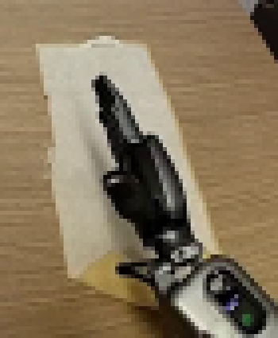
视觉工具实际返回图片 3
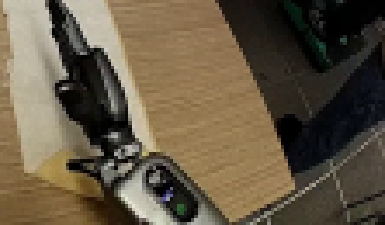
视觉工具实际返回图片 4
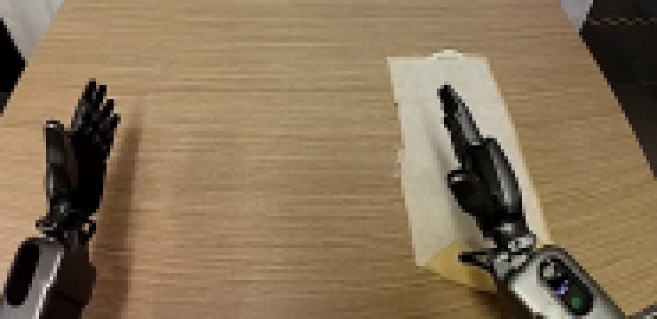
视觉工具实际返回图片 5
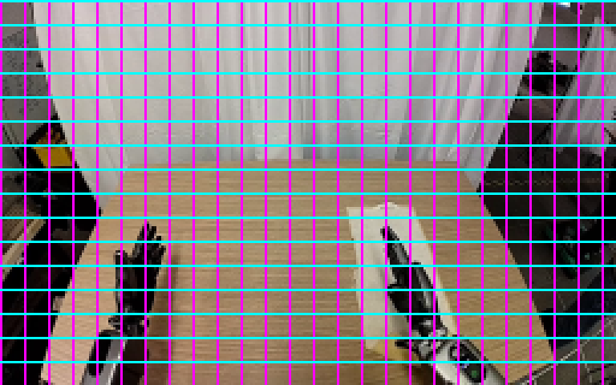
视觉工具实际返回图片 6
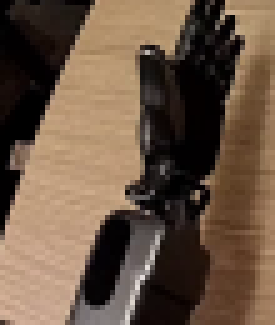
视觉工具实际返回图片 7
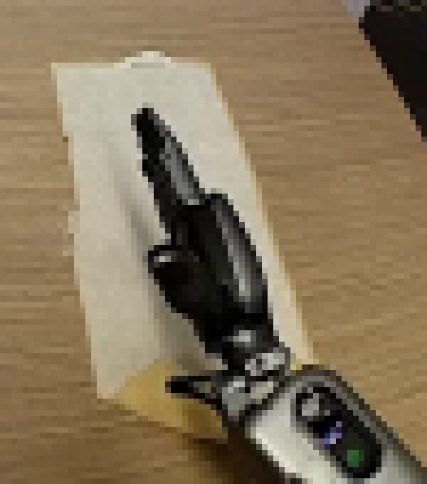
视觉工具实际返回图片 8
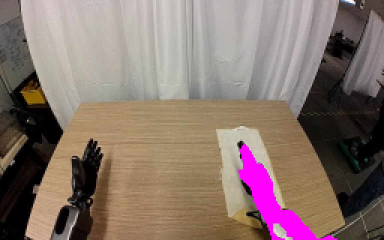
视觉工具实际返回图片 9
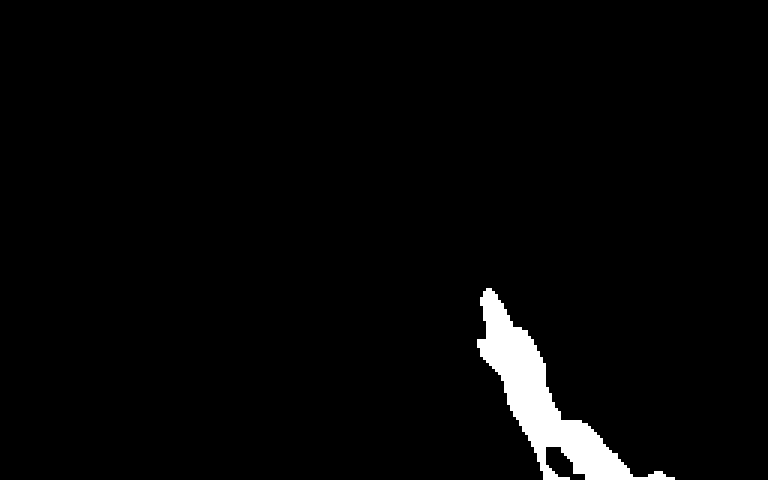
视觉工具实际返回图片 10
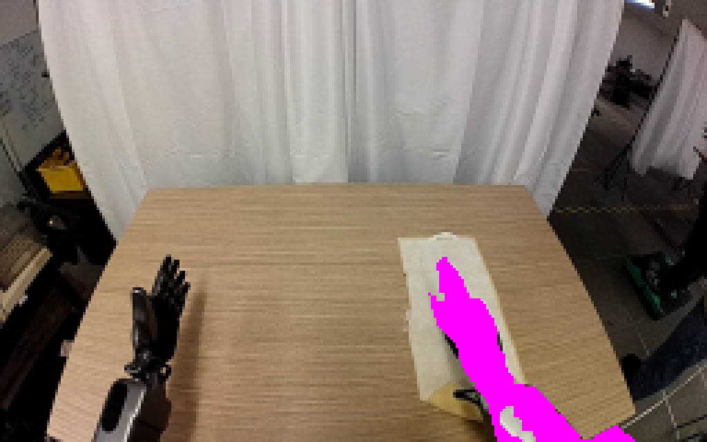
视觉工具实际返回图片 11
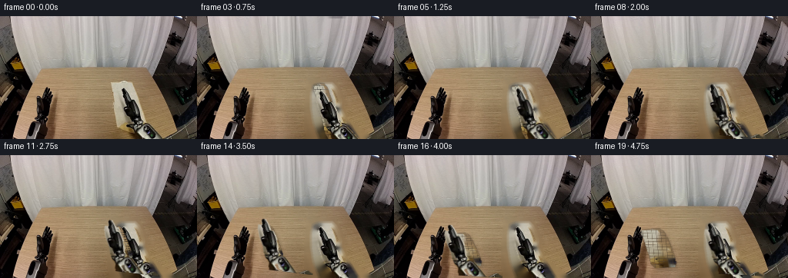
视觉工具实际返回图片 12
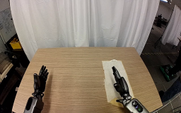
视觉工具实际返回图片 13
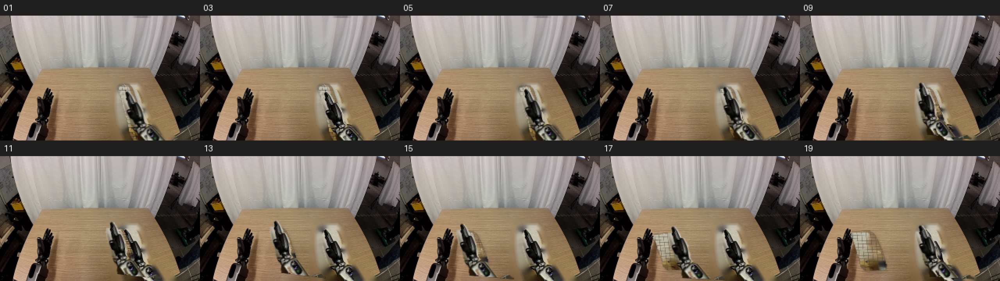
视觉工具实际返回图片 14
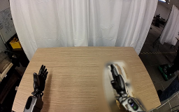
视觉工具实际返回图片 15
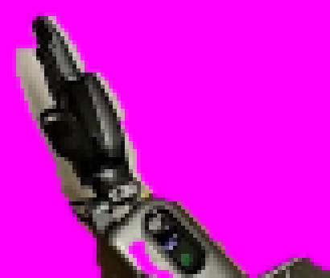
视觉工具实际返回图片 16
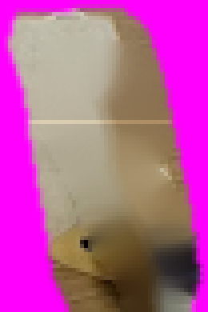
视觉工具实际返回图片 17
视觉工具实际返回图片 18
视觉工具实际返回图片 19
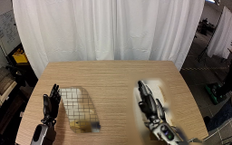
视觉工具实际返回图片 20
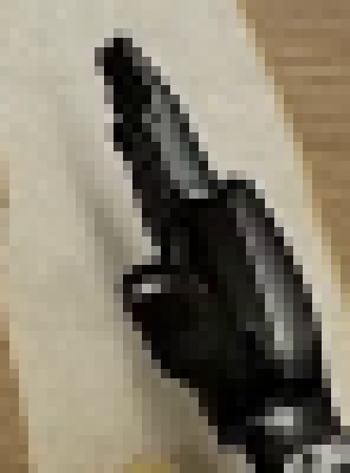
视觉工具实际返回图片 21
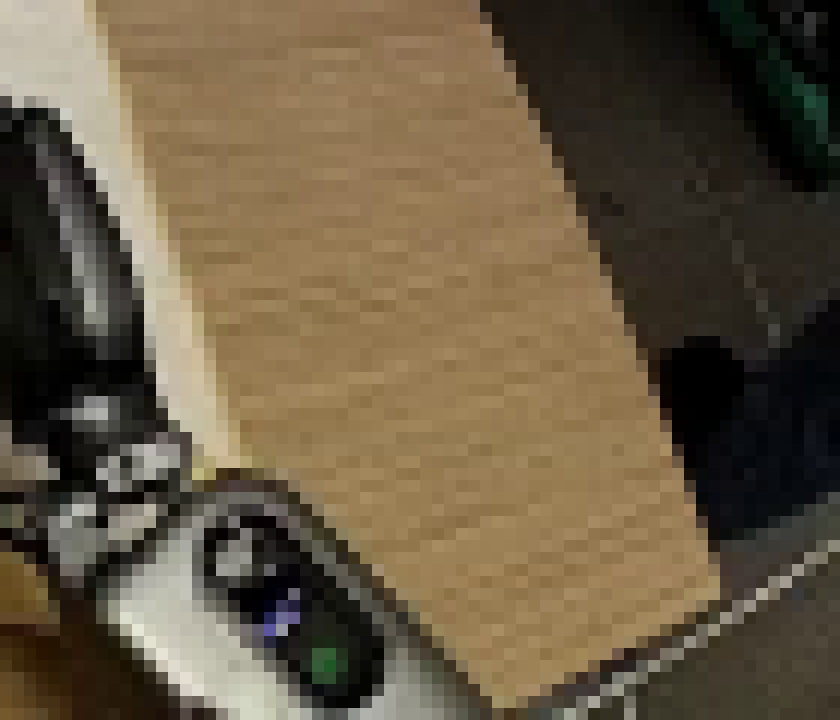
视觉工具实际返回图片 22
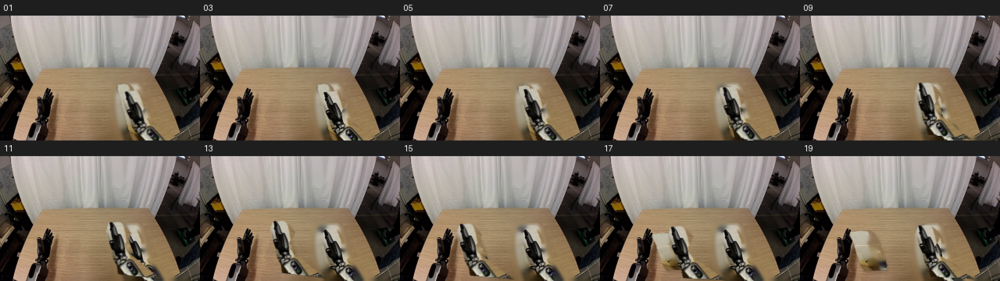
视觉工具实际返回图片 23
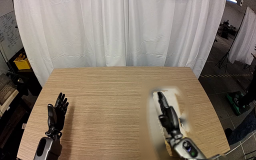
视觉工具实际返回图片 24
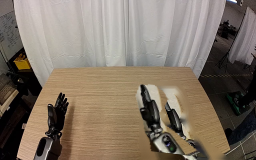
视觉工具实际返回图片 25
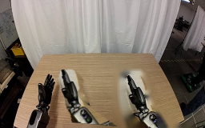
视觉工具实际返回图片 26
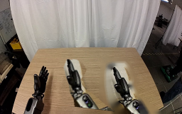
视觉工具实际返回图片 27
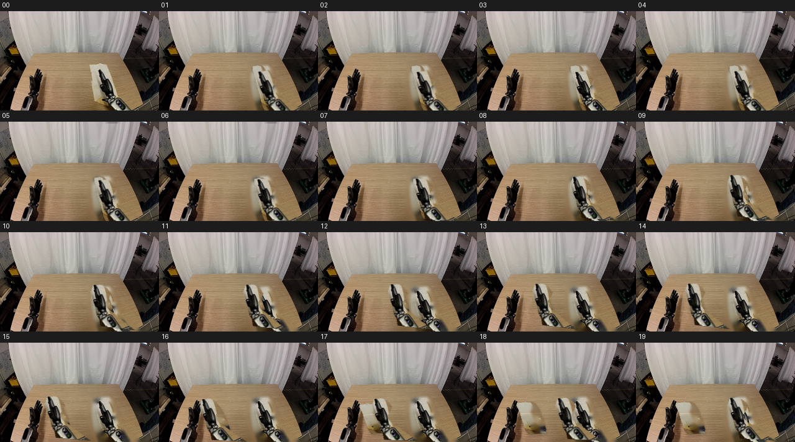
保存候选 3 份；完成命令 25 次；可验证图片返回 27 张。原始 API 响应与完整日志保留在本地。